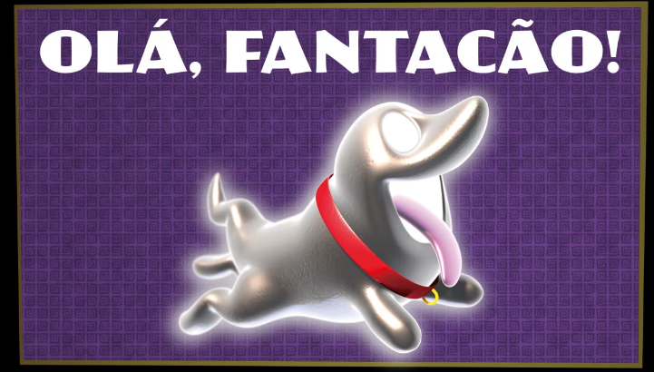
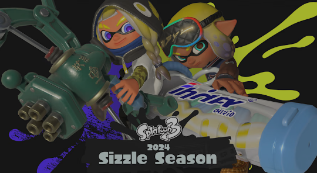

Goombas fofoqueiros, lutadores ciumentos, computadores tagarelas... este é o mundo do jogo Paper
Mario™: The Thousand-Year Door! Os nefastos X-Nauts estão em busca do tesouro atrás da Thousand-Year
Door, e será necessário um elenco de heróis e personagens excêntricos para detê-los. Complete as
missões para conseguir as seguintes estátuas de Mario e amigos.Essas missões estão disponíveis de 23
de maio à 0h até 27 de junho à 0h (horário do Pacífico).

Esta aussombração é tão adorável!
Quem é um bom fantasma? Este espírito alegre é travesso, brincalhão e, ah, muito adorável! Ele pode
dar trabalho às vezes (sinto muito, Luigi), mas está sempre disposto a dar tudo de si.
Você verá esse cãozinho levado no próximo jogo Luigi's Mansion™ 2 HD, que será lançado em 27 de
junho. Cabe a Luigi explorar diferentes mansões assombradas enquanto tenta ajudar a consertar a Lua
Negra Negra e restaurar o lado amigável dos fantasmas novamente.

Prepare-se para a nova Sizzle Season
Uau, não está esquentando aqui, colegas pesquisadores? Embora possa ser a temperatura, estou
apostando em quão quente é a nova faixa do SashiMori. (As lulinhas dizem “quente”?)
Oh! Espere! Com base no e-mail que esqueci de ler esta manhã, esta situação terrível é, na verdade,
causada pela nova Sizzle Season chegando ao jogo Splatoon™ 3! Que transpirador, quero dizer,
inspirador! Este conteúdo faz parte de uma atualização gratuita do jogo.